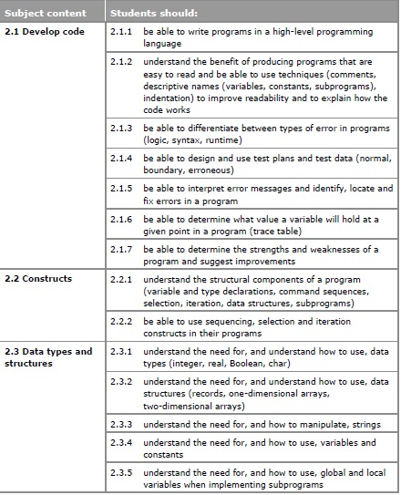
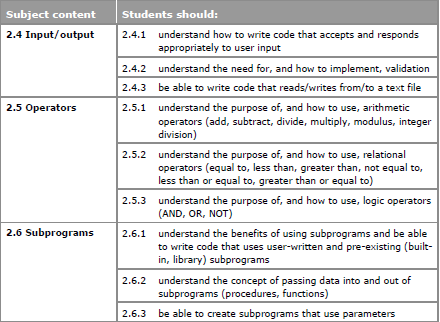

Programming languages
Algorithms are designed to solve problems. Programming languages are used to implement algorithms. They create the programs (software) that communicate instructions to a computer.
There are many different types of programming languages. But they all have the ability to:
- input data from a device such as a keyboard
- output data to a device such as a screen
- process calculations like addition and subtraction
- process decisions based on certain conditions being met
- process repetition for a certain number of times, or while a condition is met, or until a condition is met
Languages are defined as human-readable or machine-readable.
Human-readable instructions are encoded in a language that humans can use and understand, while machine-readable instructions are in a language that computers understand, and are in >binary code.
Languages are also described as high level or low level. Low-level languages, such as assembly language, more closely reflect the mechanical workings of the CPU.
High-level languages include Java, JavaScript, C++, Ruby, BASIC or Python, while low-level languages include C, assembly language, and .
A computer's CPU only understands (executes) series of binary numbers - so all programming languages are converted into binary code. Low-level instructions can be processed more speedily than high-level languages, but they are more difficult for people to read and write.
For major web applications and powerful games, developers need to know how to code in low-level languages in order to maximise the speed and efficiency of a program. Modern games are typically programmed using a variety of languages.
Assemblers, compilers and interpreters
Translators - usually included within programming software - convert high-level code into machine code. Translators are assemblers, interpreters or compilers.
Assembler
'An assembler translates assembly language into machine code. Assembly language is a low-level language written in mnemonics that closely reflects the operations of the CPU.
Interpreter
An interpreter translates code into machine code, instruction by instruction - the CPU executes each instruction before the interpreter moves on to translate the next instruction. Interpreted code will show an error as soon as it hits a problem, so it is easier to debug than compiled code.
An interpreter does not create an independent final set of source code - source code is created each time it runs. Interpreted code is slower to execute than compiled code.
Interpreted languages include JavaScript, PHP, Python and Ruby. Interpreted languages are also called scripting languages. These are ideal for using within dynamic web applications. They are used for client-side and server-side coding, as they are small programs that are executed within the browser.
Compiler
A compiler translates the whole program into machine code before the program is run. It can be difficult to test individual lines of compiled code compared to interpreted languages as all bugs are reported after the program has been compiled.
The machine code is saved and stored separately to the high-level code. Compilation is slow but machine code can be executed quickly.
Java and C++ are compiled programming languages. Java is a high-level programming language which is compiled to produce bytecode which is then interpreted by a virtual machine (VM). Bytecode is code which is compiled and can then be interpreted.
Virtual machines
A process virtual machine is a programming environment that allows a program written for one type of machine to run on other types of machine without any changes being necessary. For example, the Java Virtual Machine allows Java bytecode produced on a Microsoft Windows OS to run on a Unix OS without any changes.
A system virtual machine is a software application run by the host operating system of a computer which emulates a second operating system. This permits the installation and execution of software applications on the virtual machine (VM) as if they were being installed and run on a separate computer.
For example, it is possible to run a Microsoft Windows Virtual Machine on an Apple Mac - allowing software applications that only work on the Microsoft Windows OS to be run via the VM, which in turn is run on the Mac.
IDE
An integrated development environment (IDE) is an application used to create software. An IDE can often support different languages.
IDEs have a number of different tools and functions that assist a developer in the creation of software.
Code editor
The environment where the user can write code is called the shell. The code editor is a text edit area that allows developers to write, edit and save a document of code. It has features that assist with the writing and editing of code. These include:
- Auto-completion (or code completion). This is designed to save time while writing code. As you start to type the first part of a function, it suggests or completes the function and any arguments or variables.
- Bracket matching. This is used for languages that use pairs of brackets to mark out blocks of code. It allows the code to be read and understood more quickly. If you forget to close a bracket while writing, coloured sections may help you to detect missing brackets.
- Syntax checks. This recognises incorrect use of syntax and highlights any errors.
IDEs have a runtime environment. This means that you can execute the program one step at a time. This is useful to test that the code is working line by line before creating the final complete program.
Other IDE tools
The IDE also includes several tools to automate and speed up processes.
- Translator. This compiles or interprets the code.
- Auto documentation. This explains the function and purpose of the code, eg by noting the modules and variables used, and its expected behaviour, and collates this into a text file that can be used by other developers to understand how and why the code was created.
- libraries. These provide functions that are not included in the core part of the programming language. These functions can be imported and used at the start of the program code. For example, in Python the Turtle Graphics library provides access to some simple drawing and graphics tools.
- Build automation. These tools save time by automatically doing the processes that would otherwise be done by hand. These could include testing or compiling. These tools are extremely useful when a program has many thousands of lines of code. They improve the quality of the software, minimising bad software builds as well as saving time and money.
- Debugger. This is a program within the IDE that is used to detect errors. If the debugger detects errors, it may suggest what the type of error is and what line it is on.